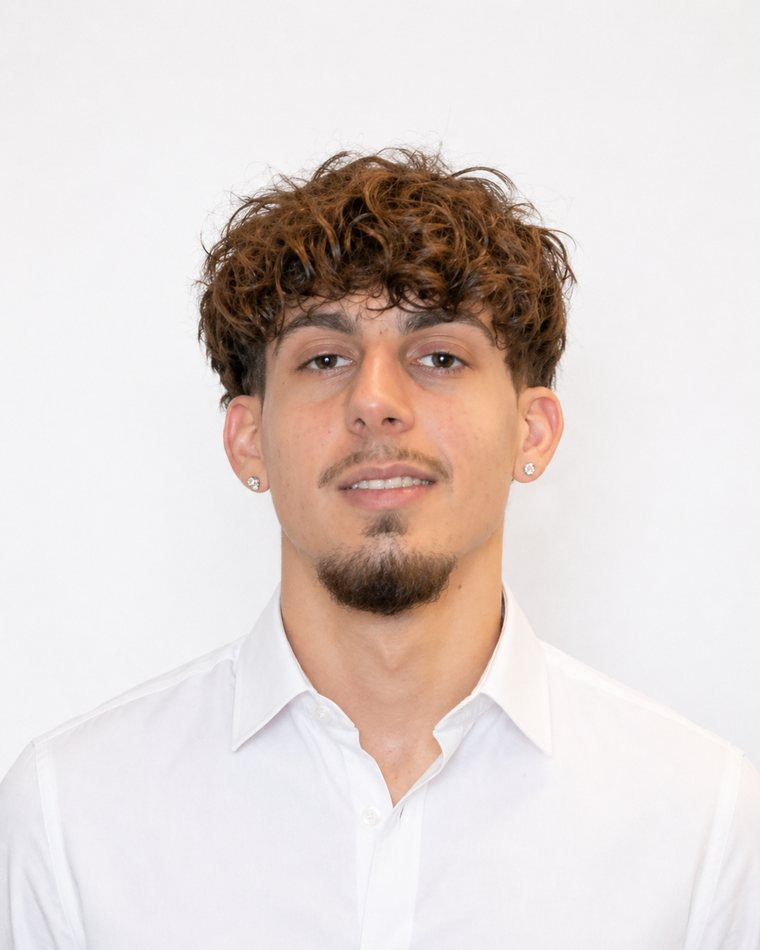

Design graphique · UX/UI · Stratégie digitale
Je conçois des et je les mets en ligne.
Luka Stojanovic, étudiant en Ingénierie des médias à la HEIG-VD. Du design graphique à l'UX/UI, je mène chaque projet du concept à la mise en ligne.
Projets
Une sélection de mes projets récents.
À propos
01.Présentation
Description

Je suis étudiant en Ingénierie des médias à la HEIG-VD, une formation à la croisée du design, de la communication et de la technique. C'est exactement là que j'aime travailler : à l'intersection du visuel et de l'interactif.
Mes projets vont de l'identité de marque à la data-visualisation, en passant par l'UX/UI et l'e-commerce. Ce qui les relie, c'est une même façon de faire : comprendre le besoin, poser une direction claire, puis l'exécuter jusqu'au détail · maquette, contenu et mise en ligne compris.
- Basé àSuisse romande
- FormationIngénierie des médias, HEIG-VD
- FocusDesign · UX/UI · Développement
- DisponibilitéEn recherche d'emploi
02.Outils
Les logiciels avec lesquels je travaille au quotidien.
03.Ce que je fais
Quatre disciplines, du premier croquis à la mise en ligne.
Contact
Et si on travaillait ensemble ?
En recherche d'emploi, Suisse romande.
Travail de Bachelor, HEIG-VD 2026–27
Je recherche actuellement un sujet de Travail de Bachelor ainsi qu'une entreprise partenaire en Suisse romande. Si un projet autour du design, de l'UX/UI ou de la stratégie digitale pourrait vous intéresser, n'hésitez pas à me contacter.